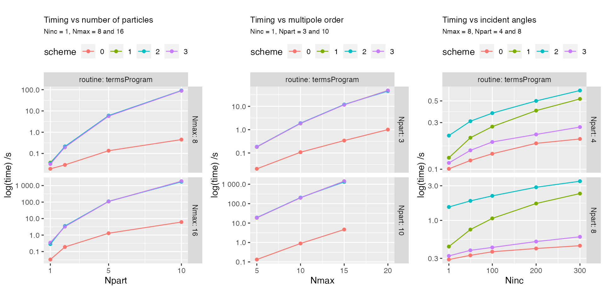

Timings, near-field calculations
03 February, 2022
Source:vignettes/108_timing_nf/108_timing_nf.Rmd
108_timing_nf.RmdObjective
This example considers the scaling of computational time with respect to key parameters:
- number of particles
- number of multipoles
- number of incidence angles
- solution scheme
The number of wavelengths simply scales the computation time for all other parameters, as everything needs to be re-calculated for each wavelength (assuming negligible input-output time, compared to the calculations).
Total timings
We first look at the total run time summaries, as a function of number of particles \(Npart\), multipolar order \(Nmax\), and number of incidence directions \(Ninc\).

Detailed timings (subroutines)
At Verbosity > 0 we can also access the timings within subroutines, to break down the calculation and identify time-consuming steps.
tibble [12,309 × 10] (S3: tbl_df/tbl/data.frame)
$ Npart : num [1:12309] 1 1 1 1 1 1 1 1 1 1 ...
$ Nmax : num [1:12309] 8 8 8 8 8 8 8 8 8 8 ...
$ Ninc : num [1:12309] 1 1 1 1 1 1 1 1 1 1 ...
$ OA : logi [1:12309] TRUE TRUE TRUE TRUE TRUE TRUE ...
$ scheme : int [1:12309] 0 0 0 0 0 0 0 0 0 0 ...
$ log : chr [1:12309] "1" "1" "1" "1" ...
$ routine: chr [1:12309] "solve" "solve" "solve" "solve" ...
$ detail : chr [1:12309] "calcSphBessels (reg. & irreg)" "calcMieTMat" "calcWignerBigD" "stageAmat" ...
$ cpu : num [1:12309] 0.001522 0.003816 0 0.0148 0.000208 ...
$ total : num [1:12309] 0.001 0 0 0.001 0 0.006 0 0 0 0 ...[1] "solve" "calcField" "calcLDOC" "mapNF"
[5] "termsProgram" "calcOaExtField" "calcOaLDOC" "calcTIJStout" Some subroutines are broken down in more detail,
[1] "calcSphBessels (reg. & irreg)" "calcMieTMat"
[3] "calcWignerBigD" "stageAmat"
[5] "balanceVecJ" "solLinSys"
[7] "invSqrMat" "balanceMatJI"
[9] "calcTIJStout" "calcTIMackowski"
[11] "calcMieIntCoeffs" NA
[13] "NFs and LDOC for all inc." "calcVTACs"
[15] "calcVSWs" "calcOaExtField"
[17] "irreg calcVSWs" "reg calcVSWs"
[19] "calcOaLDOC" "post-inversion"